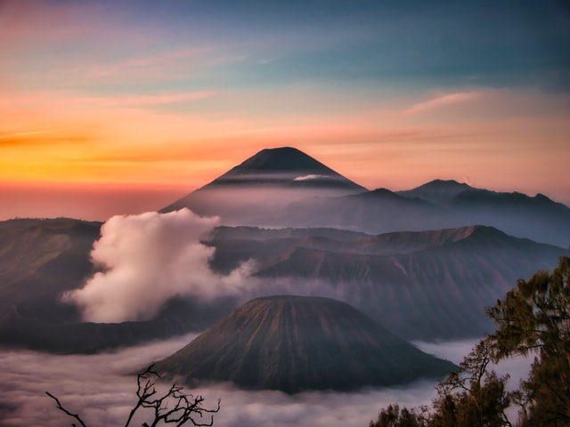
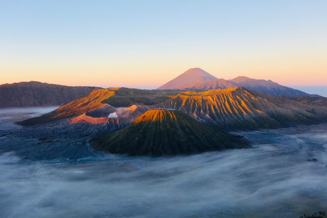
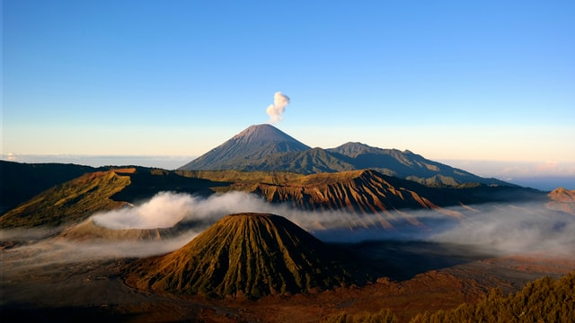
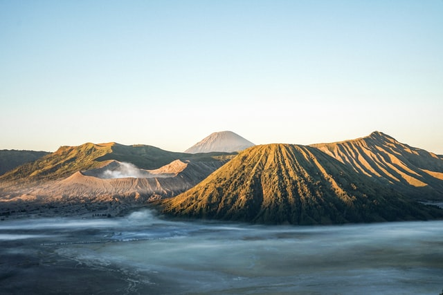

Gunung Bromo (dari bahasa Sanskerta: Brahma, salah seorang Dewa Utama dalam agama Hindu) atau dalam bahasa Tengger dieja "Brama", adalah sebuah gunung berapi aktif di Jawa Timur, Indonesia. Gunung ini memiliki ketinggian 2.329 meter di atas permukaan laut dan berada dalam empat wilayah kabupaten, yakni Kabupaten Probolinggo, Kabupaten Pasuruan, Kabupaten Lumajang, dan Kabupaten Malang. Gunung Bromo terkenal sebagai objek wisata utama di Jawa Timur. Sebagai sebuah objek wisata, Bromo menjadi menarik karena statusnya sebagai gunung berapi yang masih aktif. Gunung Bromo termasuk dalam kawasan Taman Nasional Bromo Tengger Semeru.
Bentuk tubuh Gunung Bromo bertautan antara lembah dan ngarai dengan kaldera atau lautan pasir seluas sekitar 10 kilometer persegi. Ia mempunyai sebuah kawah dengan garis tengah ± 800 meter (utara-selatan) dan ± 600 meter (timur-barat). Sedangkan daerah bahayanya berupa lingkaran dengan jari-jari 4 km dari pusat kawah Bromo.
Selama abad 20 dan abad 21, Gunung Bromo telah meletus sebanyak beberapa kali, dengan interval waktu yang teratur, yaitu 30 tahun. Letusan terbesar terjadi 1974, sedangkan letusan terakhir terjadi pada 2015-sekarang.
Bagi penduduk sekitar Gunung Bromo, suku Tengger, Gunung Bromo/Gunung Brahma dipercaya sebagai gunung suci. Setiap setahun sekali masyarakat Tengger mengadakan upacara Yadnya Kasada atau Kasodo. Upacara ini bertempat di sebuah pura yang berada di bawah kaki Gunung Bromo dan dilanjutkan ke puncak Bromo. Upacara diadakan pada tengah malam hingga dini hari setiap bulan purnama sekitar tanggal 14 atau 15 pada bulan Kasodo (kesepuluh) menurut penanggalan Jawa.
   